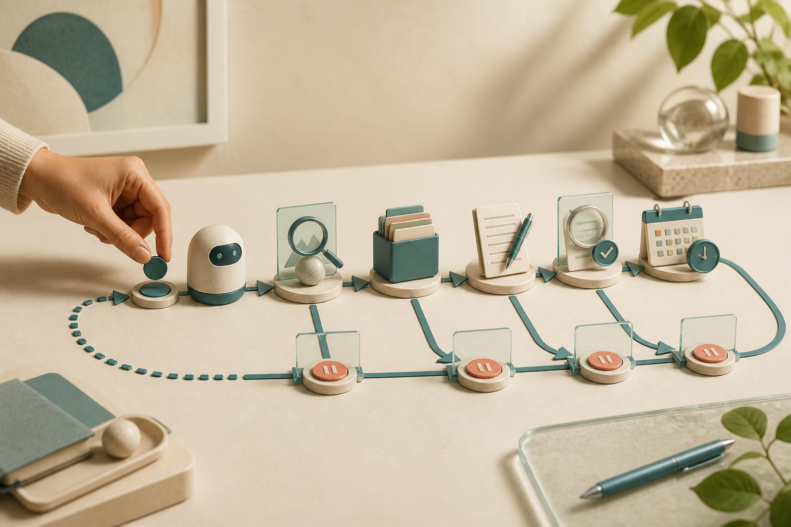

Agent software · Practical guide
AI 직원에게 자기 컴퓨터를 주는 법
Hermes Desktop Bot Mode와 Grok Bot은 챗봇을 ‘대화 상대’에서 ‘계속 일하는 작업자’로 바꾸려 한다. 둘의 차이와 조사·초안·검토 업무를 실제로 맡기는 안전한 시작법을 정리했다.
요즘 AI 소프트웨어 뉴스에서 가장 중요한 변화는 모델 점수가 조금 오르는 일이 아닐 수 있다. 더 큰 변화는 AI에게 브라우저와 파일, 일정, 반복 작업을 맡기고 사람이 결과만 확인하는 사용 방식이 제품의 기본 화면으로 들어오는 것이다.
Nous Research의 Hermes Desktop은 여러 에이전트를 봇처럼 만들어 함께 일하게 하는 Bot Mode를 제공한다. xAI가 공개한 Grok Bot은 각 봇에게 자체 컴퓨터를 주고, 사용자가 가르친 업무를 예약 실행하는 방향을 내세운다. 겉모습은 비슷하지만 출발점은 꽤 다르다.
이 글은 어느 쪽의 모델이 더 똑똑한지 판정하는 벤치마크가 아니다. “아침마다 공개 자료를 찾아 요약하고, 초안을 만든 뒤, 사람이 승인하면 다음 단계로 넘긴다” 같은 실제 업무를 어느 구조로 시작할지를 다룬다.
같은 ‘AI 직원’처럼 보여도 운영 방식은 다르다
Hermes Bot Mode
내 컴퓨터나 선택한 백엔드에서 프로필별 상태·기억·도구를 나누고, Desktop에서 팀과 루틴을 구성한다.
Grok Bot
봇마다 전용 컴퓨터를 제공하고, 도구 로그인과 상시 실행·예약 루틴을 서비스 경험으로 묶는다.
Hermes: 내 환경에 작은 AI 팀을 만드는 쪽
Hermes Desktop의 장점은 대화, 기술 설정, 예약 작업, 프로필, 메시징을 한곳에서 다룬다는 점이다. 이미 CLI를 쓰던 사람이라면 같은 설정·API 키·세션·스킬·기억을 Desktop과 공유한다. 공식 문서에는 Skills, Cron, Profiles, Messaging, Agents, Command Center가 관리 영역으로 제시돼 있다.
핵심은 프로필이다. 조사원, 작성자, 검토자처럼 프로필을 나누면 각각 별도의 설정, 기억, 세션, 스킬, 예약 작업을 가질 수 있다. Desktop의 Bot Mode에서는 이런 프로필이 이름과 설명을 가진 봇으로 보이며, 그룹 대화나 봇 간 호출로 일을 넘길 수 있다.
예를 들어 조사 봇에게 “공식 발표와 독립 언론을 나눠 수집하라”고 시키고, 작성 봇에는 확인된 사실만 전달하게 만들 수 있다. 검토 봇은 날짜와 수치, 링크 누락만 보게 한다. 한 모델에게 모든 역할을 한꺼번에 지시하는 것보다 오류가 생긴 지점을 찾기 쉽다.
하지만 프로필을 나눴다고 운영체제 권한까지 분리되는 것은 아니다. Hermes 공식 문서는 프로필이 샌드박스가 아니며, 기본 로컬 터미널에서는 에이전트가 사용자 계정과 같은 파일 접근 권한을 가진다고 명확히 경고한다.
따라서 낯선 코드나 외부 저장소를 다루려면 로컬 실행을 그대로 두지 말고 Docker, Modal, Daytona 같은 격리 백엔드를 검토해야 한다. Hermes의 보안 문서는 위험 명령 승인, 파일 쓰기 보호, 컨테이너 격리, 메시징 사용자 허용 목록을 서로 다른 방어선으로 설명한다.

Hermes를 30분 안에 시험하는 순서
처음부터 이메일 발송이나 파일 삭제를 맡길 필요는 없다. 가장 좋은 첫 과제는 공개 웹 자료를 모아 로컬 초안으로 저장하는 일이다. 실패해도 외부 사람이나 계정에 피해를 주지 않고, 결과의 정확성을 눈으로 확인할 수 있기 때문이다.
첫날에는 작고 되돌릴 수 있는 루틴 하나만 만든다
Windows와 macOS에서는 공식 Desktop 설치 파일을 받을 수 있다. CLI를 이미 설치했다면 hermes desktop으로 앱을 열 수 있다. Linux·macOS·WSL2에는 공식 셸 설치 명령이, Windows 네이티브에는 PowerShell 설치 명령이 안내돼 있다.
# Linux · macOS · WSL2
curl -fsSL https://hermes-agent.nousresearch.com/install.sh | bash
# CLI에서 역할별 프로필 만들기
hermes profile create researcher
researcher setup
researcher chatGUI를 쓴다면 Agents에서 이름, 설명, 모델, 스킬, 도구 묶음, MCP 서버를 정한다. 조사 봇에는 브라우저와 검색만, 작성 봇에는 지정된 초안 폴더 쓰기만, 검토 봇에는 읽기만 주는 식으로 시작하면 된다. 도구가 많을수록 좋은 것이 아니라 역할에 필요한 최소 권한이 더 중요하다.
그다음 Bot Chat에서 조사 과제를 한 번 수동 실행한다. 결과에 공식 링크가 있는지, 사건 발생일과 기사 작성일을 구분했는지, 모르는 내용을 만들어내지 않았는지 본다. 이 단계가 안정된 뒤에만 Cron 또는 루틴으로 시간을 지정한다.
봇 간 전달도 처음에는 짧게 만든다. 조사원이 작성자에게 넘기는 것은 “확정 사실, 불확실 사실, 출처 URL” 세 묶음이면 충분하다. 길고 자유로운 대화보다 전달 형식이 고정된 쪽이 잘못된 정보가 다음 역할로 증폭되는 일을 줄인다.
Grok Bot: 전용 컴퓨터와 상시 실행을 서비스로 사는 쪽
Grok Bot의 제안은 더 직관적이다. xAI 공식 페이지는 각 봇이 자체 컴퓨터를 사용하고, 도구에 로그인하며, 사용자의 노트북이 닫혀 있어도 병렬로 계속 일한다고 설명한다. 업무를 한 번 보여주면 루틴으로 저장해 일정에 맞춰 반복하도록 하는 것도 전면에 내세운다.
이 때문에 “가상 컴퓨터를 가진 AI 직원”이라는 표현이 잘 어울린다. 브라우저 탭 몇 개를 넘나들며 자료를 찾고, 문서를 업데이트하고, 다른 봇과 일을 주고받는 흐름을 로컬 환경 구성 없이 빠르게 시작하려는 사용자에게 매력적이다.
다만 현재 공식 페이지는 이를 초기 베타로 소개한다. 페이지에 표시된 포함 플랜은 Cursor Ultra 월 200달러, SuperGrok Heavy 월 300달러, Cursor Premium Teams 좌석당 월 120달러다. 가격과 제공 조건은 바뀔 수 있으므로 결제 직전 공식 페이지에서 다시 확인해야 한다.
다운로드 영역은 현재 macOS Apple silicon을 우선 제시한다. 다른 플랫폼을 당연히 지원한다고 가정해서는 안 된다. 자신의 기기, 계정 지역, 플랜에 베타가 열렸는지 먼저 확인하는 것이 순서다.
Grok Bot도 첫 업무는 공개 자료 조사로 잡는 편이 안전하다. 봇을 만든 뒤 필요한 사이트만 로그인하고, 검색→요약→초안 저장 과정을 한 번 보여준다. 그다음 매일 아침 루틴으로 바꾸되 외부 발송, 구매, 삭제는 승인 단계 뒤에 남겨 둔다.
한 번 성공한 데모를 매일의 업무로 바꾸는 법
첫 지시문은 목표만 쓰지 말고 입력, 과정, 결과, 금지 행동을 나눠 적는 편이 좋다. 예를 들어 “지난 24시간의 AI 소프트웨어 발표를 찾아라”에 그치지 않고, 공식 변경 기록과 독립 기사를 각각 표시하고, 가격은 공식 페이지에서만 확정하며, 결과는 지정 폴더의 새 파일로 저장하라고 적는다.
조사 봇의 결과 형식에는 제목, 사건이 실제로 일어난 날짜, 기사를 발견한 날짜, 공식 원문, 독립 출처, 아직 확인하지 못한 주장을 따로 두는 것이 유용하다. 이 구조가 있어야 작성 봇이 소셜 게시물의 흥미로운 표현을 확정 사실처럼 옮기지 않는다.
유튜브와 Threads는 이 과정에서 빼야 할 출처가 아니라 역할을 달리해야 할 출처다. 빠른 시연과 사용자 반응을 발견하는 데 쓰되, 출시일·가격·지원 운영체제·데이터 처리 같은 핵심 조건은 제품 문서와 변경 기록으로 다시 확인한다. 영상에서 실제로 재현된 실패 장면은 공식 소개에서 보이지 않는 사용성 문제를 찾는 데 특히 가치가 있다.
작성 봇에는 조사 결과 밖의 숫자를 새로 만들지 못하게 하고, 모든 중요한 주장 가까이에 링크를 남기게 한다. 검토 봇은 문체를 다듬기 전에 링크가 열리는지, 발표일과 사건일이 섞이지 않았는지, 단독 보도를 복수 출처처럼 세지 않았는지를 먼저 본다.
승인은 단순한 “확인” 버튼보다 구체적인 산출물이어야 한다. 게시 직전에는 변경된 파일 목록, 새로 추가된 외부 링크, 발송 대상, 삭제 예정 항목을 한 화면에 보여 주면 사람이 무엇을 허용하는지 알 수 있다. 승인 뒤에 내용이 바뀐다면 이전 승인은 무효로 처리하는 편이 안전하다.
계정도 업무별로 나누는 것이 좋다. 개인 이메일 전체를 보여 주는 대신 조사 전용 계정과 읽기 전용 폴더를 만들고, 테스트 일정만 담은 별도 캘린더를 연결한다. 에이전트가 잘못 행동했을 때 취소할 수 있는 권한의 범위가 작아진다.
비밀번호를 대화창에 직접 붙여 넣지 말고 제품이 제공하는 인증 저장소나 OAuth 연결을 사용해야 한다. 사용하지 않는 MCP와 도구는 꺼 두고, 처음에는 삭제·결제·관리자 권한을 가진 도구를 설치하지 않는 편이 낫다. 편리한 통합 하나가 에이전트가 접근할 수 있는 데이터 범위를 크게 넓힐 수 있다.
Hermes에서 프로필별 작업 디렉터리를 정하는 것은 좋은 정리 방법이지만 보안 경계는 아니다. 실제 격리가 필요하면 컨테이너나 원격 샌드박스를 사용하고, 네트워크가 필요 없는 코드 시험은 외부 통신도 끄는 편이 안전하다. 반대로 웹 조사는 네트워크가 필요하므로 읽기 전용 자격 증명과 승인 규칙으로 위험을 줄인다.
루틴은 프롬프트만 저장하는 기능으로 생각해서는 안 된다. 사용한 모델, 연결된 도구, 허용된 폴더, 실행 시간, 마지막으로 사람이 확인한 날짜를 함께 기록해야 한다. 제품 업데이트나 사이트 화면 변경 뒤에는 예전에 성공한 루틴도 다시 수동 실행해 봐야 한다.
일주일 시험에서는 성공 횟수만 세지 말고 네 종류의 실패를 구분한다. 자료를 못 찾은 누락, 틀린 내용을 만든 사실 오류, 같은 행동을 반복한 도구 오류, 승인을 건너뛴 권한 오류다. 서로 원인이 달라 하나의 “정확도” 점수로 합치면 개선할 지점을 놓치기 쉽다.
사람의 시간도 비용이다. AI가 초안을 10분 만에 만들더라도 출처를 다시 찾고 형식을 고치는 데 40분이 들면 자동화의 이익은 작다. 완료된 초안 한 편당 사람 검토 시간, 재실행 횟수, 유료 모델·호스팅 비용을 함께 기록하면 Hermes와 Grok Bot을 같은 기준으로 비교할 수 있다.
한국 사이트를 다루는 루틴은 로그인 만료, 본인 인증, 팝업, 자정 기준의 날짜 변경을 따로 시험해야 한다. 해외 서버의 표준시와 한국 시간이 달라 “오늘 뉴스” 범위가 어긋날 수 있으므로 실행 시각과 검색 시작·종료 시각을 결과에 함께 남긴다. 자동 번역된 제목만 보지 말고 한국어 원문 링크와 게시 시각이 실제 페이지에 있는지도 확인한다.
에이전트에게 줄 권한은 세 층으로 나눈다
AI가 쓴 문장을 사람이 읽는 것과 AI가 직접 계정에서 행동하는 것은 위험 수준이 다르다. 제품 이름과 관계없이 처음에는 읽기, 내부 쓰기, 외부 행동을 구분해야 한다.
자동화 범위보다 먼저 ‘멈출 곳’을 정한다
특히 “항상 허용”은 편리하지만 작은 오판을 반복 실행으로 바꿀 수 있다. Hermes의 위험 명령 승인은 한 번, 세션 동안, 항상, 거부처럼 범위를 나눌 수 있다. 시간 초과 시 기본 거부하는 설정도 제공한다. Grok Bot에서도 승인 요청이 필요한 행동을 처음부터 분리해 두는 것이 좋다.
로그도 결과물의 일부로 봐야 한다. 어떤 링크를 열었고 어떤 파일을 바꿨으며 어느 단계에서 승인을 받았는지 남지 않는 자동화는, 빠르게 돌아가더라도 업무 도구로 쓰기 어렵다. 첫 주에는 성공 횟수보다 잘못된 시도를 얼마나 빨리 발견할 수 있는지를 보는 편이 낫다.
그래서 어떤 쪽을 고를까
Hermes는 설치와 모델·백엔드 선택을 직접 감수하는 대신 구성의 자유가 크다. Grok Bot은 전용 컴퓨터와 상시 실행을 하나의 유료 서비스로 묶어 시작 장벽을 낮춘다. 선택은 모델 팬덤이 아니라 운영 책임을 어디에 둘지의 문제에 가깝다.
| 내 상황 | 먼저 볼 선택 | 이유 |
|---|---|---|
| 모델·도구·실행 환경을 직접 고르고 싶다 | Hermes | 프로필, 도구 묶음, 여러 터미널 백엔드를 조합할 수 있다. |
| 설정보다 전용 컴퓨터와 상시 실행이 중요하다 | Grok Bot | 호스팅된 컴퓨터와 루틴을 제품 경험으로 제공한다. |
| 민감한 코드와 파일을 다룬다 | 격리부터 설계 | 어느 제품이든 최소 권한, 별도 계정, 샌드박스, 승인 지점이 먼저다. |
| 뉴스 조사·초안을 매일 반복한다 | 둘 다 소규모 시험 | 공개 자료 읽기와 초안 저장만으로 정확도와 운영 비용을 비교할 수 있다. |
한국 사용자에게는 한 가지 현실적인 변수도 있다. 서비스 지역과 가격, 한국어 조사 품질, 국내 사이트 로그인 호환성이 모두 다를 수 있다. 데모 영상의 한 번 성공한 장면보다 같은 루틴을 일주일 반복했을 때 누락률과 사람의 수정 시간을 기록해야 한다.
필자는 첫 실험을 “오전 8시에 AI 뉴스 후보 다섯 개를 찾고, 공식 원문과 독립 매체를 붙여 초안 폴더에 저장하라” 정도로 권한다. 게시 버튼은 누르지 못하게 하고, 사람은 출처와 날짜를 확인한 뒤 다음 역할로 넘긴다. 이것만 안정적으로 돌아가도 챗봇과 업무 에이전트의 차이를 충분히 체감할 수 있다.
짧은 결론: Hermes는 ‘내가 조립하는 AI 팀’, Grok Bot은 ‘전용 컴퓨터까지 빌리는 AI 팀’에 가깝다. 어느 쪽이든 진짜 혁신은 AI가 멈추지 않는 데 있지 않고, 어디에서 멈춰 사람에게 물어야 하는지를 설계하는 데 있다.